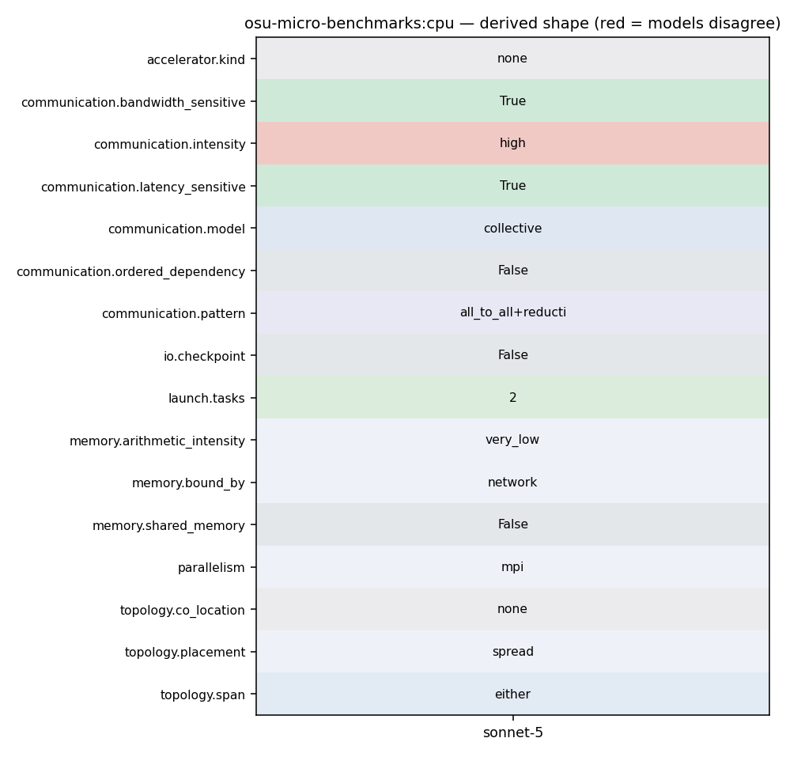

mpirun_rsh -np N -hostfile hostfile osu_allreduce (or mpirun -np N ./osu_allreduce)
124 fprintf(stdout, "# Datatype: %s.\n", mpi_type_name_str)); 125 fflush(stdout); 126 print_only_header(rank); 127 for (size = options.min_message_size; size <= options.max_message_size; 128 size *= 2) { 129 num_elements = size / mpi_type_size; 130 if (0 == num_elements) { 131 continue; 132 } 133 if (size > LARGE_MESSAGE_SIZE) { 134 options.skip = options.skip_large; 135 options.iterations = options.iterations_large; 136 } 137 138 omb_graph_allocate_and_get_data_buffer( 139 &omb_graph_data, &omb_graph_options, size, options.iterations);
143 if (1 == options.omb_enable_mpi_in_place) { 144 sendbuf = MPI_IN_PLACE; 145 } 146 for (i = 0; i < options.iterations + options.skip; i++) { 147 if (i == options.skip) { 148 omb_papi_start(&papi_eventset); 149 } 150 if (options.validate) { 151 set_buffer_validation(sendbuf, recvbuf, size, options.accel, 152 i, omb_curr_datatype, 153 omb_buffer_sizes); 154 for (j = 0; j < options.warmup_validation; j++) { 155 MPI_CHECK(MPI_Barrier(omb_comm)); 156 MPI_CHECK(MPI_Allreduce(sendbuf_warmup, recvbuf_warmup, 157 num_elements, omb_curr_datatype, 158 MPI_SUM, omb_comm)); 159 } 160 MPI_CHECK(MPI_Barrier(omb_comm)); 161 } 162 163 t_start = MPI_Wtime(); 164 MPI_CHECK(MPI_Allreduce(sendbuf, recvbuf, num_elements, 165 omb_curr_datatype, MPI_SUM, omb_comm)); 166 t_stop = MPI_Wtime();
1 #define BENCHMARK "OSU MPI%s Allreduce Latency Test" 2 /* 3 * Copyright (c) 2002-2024 the Network-Based Computing Laboratory 4 * (NBCL), The Ohio State University.
124 fprintf(stdout, "# Datatype: %s.\n", mpi_type_name_str)); 125 fflush(stdout); 126 print_only_header(rank); 127 for (size = options.min_message_size; size <= options.max_message_size; 128 size *= 2) { 129 num_elements = size / mpi_type_size; 130 if (0 == num_elements) { 131 continue; 132 }
153 omb_buffer_sizes); 154 for (j = 0; j < options.warmup_validation; j++) { 155 MPI_CHECK(MPI_Barrier(omb_comm)); 156 MPI_CHECK(MPI_Allreduce(sendbuf_warmup, recvbuf_warmup, 157 num_elements, omb_curr_datatype, 158 MPI_SUM, omb_comm)); 159 } 160 MPI_CHECK(MPI_Barrier(omb_comm)); 161 } 162 163 t_start = MPI_Wtime(); 164 MPI_CHECK(MPI_Allreduce(sendbuf, recvbuf, num_elements, 165 omb_curr_datatype, MPI_SUM, omb_comm)); 166 t_stop = MPI_Wtime(); 167 MPI_CHECK(MPI_Barrier(omb_comm)); 168 169 if (options.validate) {
161 } 162 163 t_start = MPI_Wtime(); 164 MPI_CHECK(MPI_Allreduce(sendbuf, recvbuf, num_elements, 165 omb_curr_datatype, MPI_SUM, omb_comm)); 166 t_stop = MPI_Wtime(); 167 MPI_CHECK(MPI_Barrier(omb_comm)); 168
186 omb_papi_stop_and_print(&papi_eventset, size); 187 latency = (double)(timer * 1e6) / options.iterations; 188 189 MPI_CHECK(MPI_Reduce(&latency, &min_time, 1, MPI_DOUBLE, MPI_MIN, 0, 190 omb_comm)); 191 MPI_CHECK(MPI_Reduce(&latency, &max_time, 1, MPI_DOUBLE, MPI_MAX, 0, 192 omb_comm)); 193 MPI_CHECK(MPI_Reduce(&latency, &avg_time, 1, MPI_DOUBLE, MPI_SUM, 0, 194 omb_comm)); 195 avg_time = avg_time / numprocs; 196 omb_stat = omb_get_stats(omb_lat_arr); 197 if (options.validate) { 198 MPI_CHECK(MPI_Allreduce(&local_errors, &errors, 1, MPI_INT, 199 MPI_SUM, omb_comm)); 200 } 201 202 if (options.validate) {
75 break; 76 } 77 78 if (numprocs < 2) { 79 if (rank == 0) { 80 fprintf(stderr, "This test requires at least two processes\n"); 81 } 82 83 omb_mpi_finalize(omb_init_h); 84 exit(EXIT_FAILURE); 85 } 86 bufsize = (options.max_message_size); 87 if (allocate_memory_coll((void **)&sendbuf, bufsize, options.accel)) { 88 fprintf(stderr, "Could Not Allocate Memory [rank %d]\n", rank);
161 } 162 163 t_start = MPI_Wtime(); 164 MPI_CHECK(MPI_Allreduce(sendbuf, recvbuf, num_elements, 165 omb_curr_datatype, MPI_SUM, omb_comm)); 166 t_stop = MPI_Wtime(); 167 MPI_CHECK(MPI_Barrier(omb_comm)); 168 169 if (options.validate) {
161 } 162 163 t_start = MPI_Wtime(); 164 MPI_CHECK(MPI_Allreduce(sendbuf, recvbuf, num_elements, 165 omb_curr_datatype, MPI_SUM, omb_comm)); 166 t_stop = MPI_Wtime(); 167 MPI_CHECK(MPI_Barrier(omb_comm)); 168 169 if (options.validate) {
49 } 50 } 51 52 omb_init_h = omb_mpi_init(&argc, &argv); 53 omb_comm = omb_init_h.omb_comm; 54 if (MPI_COMM_NULL == omb_comm) { 55 OMB_ERROR_EXIT("Cant create communicator"); 56 } 57 MPI_CHECK(MPI_Comm_rank(omb_comm, &rank)); 58 MPI_CHECK(MPI_Comm_size(omb_comm, &numprocs)); 59 60 omb_graph_options_init(&omb_graph_options); 61 switch (po_ret) {
102 3 host1 host2 103 4 host2 host1 104 5 host2 host2 105 6 host2 host1 106 7 host2 host2 107 108 If you're using mpirun_rsh the ranks are assigned in the order they are seen in 109 the hostfile or on the command line. Please see your process managers' 110 documentation for information on how to control the distribution of the rank to 111 host mapping. 112 113 Point-to-Point MPI Benchmarks 114 -----------------------------
105 6 host2 host1 106 7 host2 host2 107 108 If you're using mpirun_rsh the ranks are assigned in the order they are seen in 109 the hostfile or on the command line. Please see your process managers' 110 documentation for information on how to control the distribution of the rank to 111 host mapping. 112 113 Point-to-Point MPI Benchmarks 114 -----------------------------